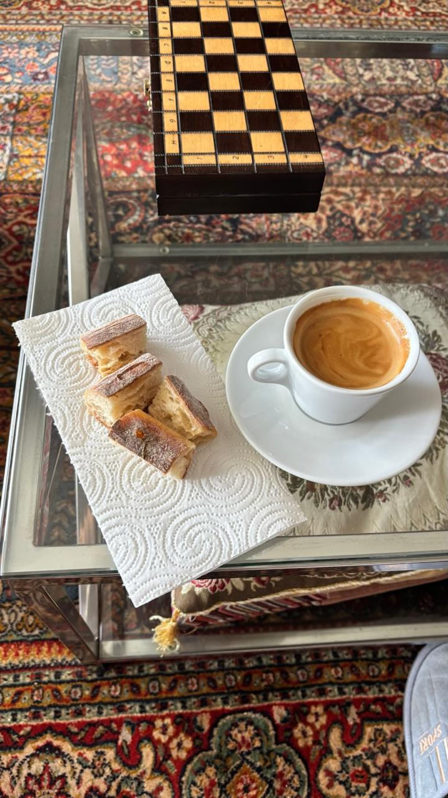
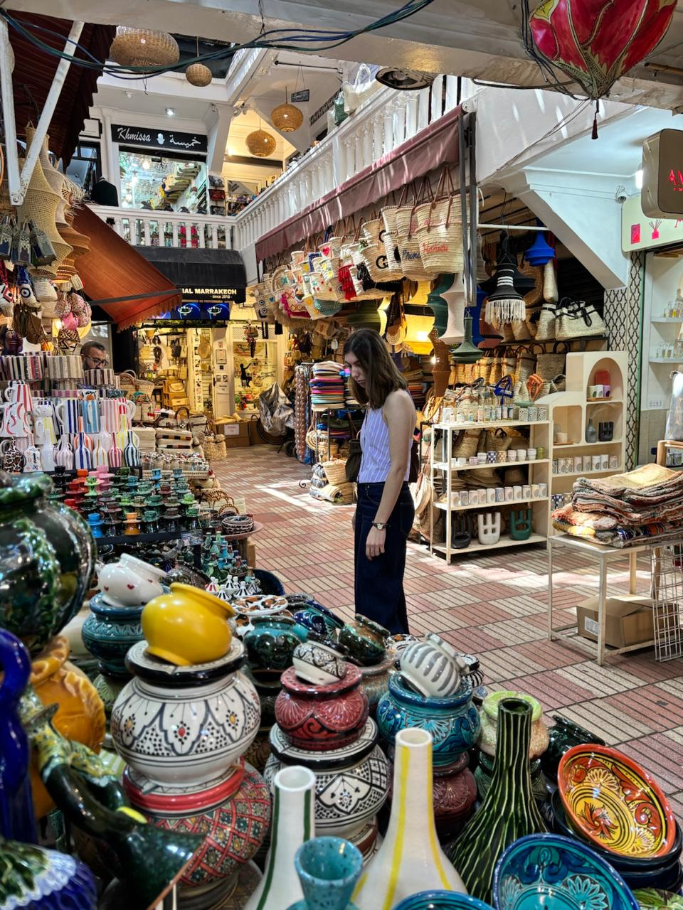

Martina Pino
Estudiante de Diseño Multimedial enfocada en UX/UI



Completando mi carrera
con un título.
ESPECIALIZARME EN
UX/UI
Sumergiéndome en la
psicología del
comportamiento y sistemas.
APRENDER FRANCÉS
Desbloqueando una nueva
cultura a través del idioma.
MEJORAR MI INGLÉS
Fluidez para una comunidad
de diseño global.
VIAJAR MÁS
Coleccionando experiencias
e inspiración visual.